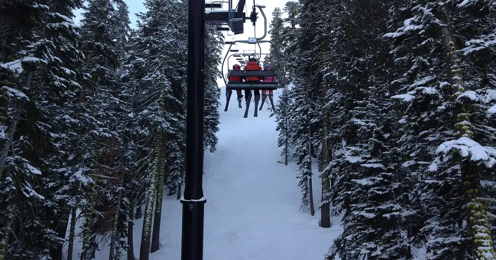
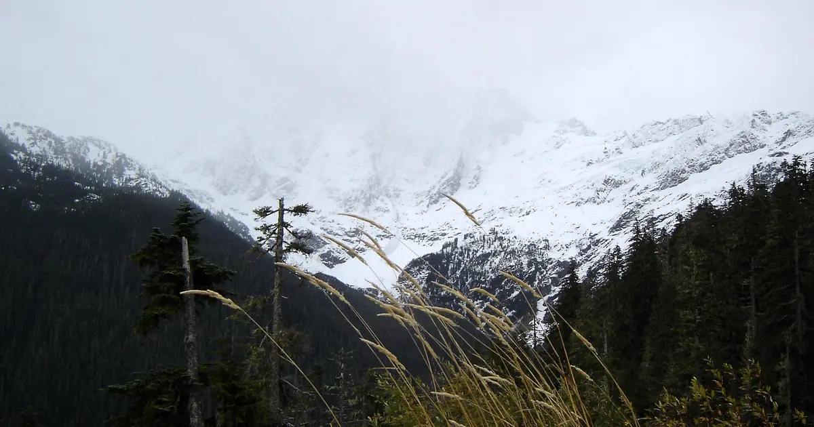

Cómo llegar a Palisades Tahoe: control de cadenas, reserva de aparcamiento y buses gratis
Palisades Tahoe, en Olympic Valley, al noroeste del lago Tahoe, se alcanza por carretera de montaña tanto desde Reno como desde la bahía de San Francisco. En invierno, dos cosas deciden el viaje: los controles de cadenas de California en las carreteras de montaña y la reserva de aparcamiento que la estación exige los días de más gente.
Consulta la previsión de nieve en tiempo real de Palisades Tahoe Olympic Valley en la app SnowScopeEspesor de nieve, alertas de nieve polvo y mapa 3D, gratis.
De dónde vienes: las distancias
La estación da estas distancias por carretera: unas 42 millas (68 km) desde Reno, 96 millas (154 km) desde Sacramento y 196 millas (315 km) desde San Francisco. Reno es la ciudad con el aeropuerto más cercano. The Village at Palisades Tahoe está en el 1960 de Olympic Valley Road; la base de Alpine Meadows tiene su propia dirección en Alpine Meadows Road.

Control de cadenas: qué significan R-1, R-2 y R-3
Cuando nieva, Caltrans establece controles de cadenas y muestra el nivel en carteles. R-1: cadenas obligatorias para todos los vehículos salvo turismos y camionetas ligeras de menos de 6000 libras con neumáticos de nieve en al menos dos ruedas motrices, que aun así deben llevar cadenas. R-2: cadenas o dispositivos de tracción para todos salvo los 4x4 y tracción total con neumáticos de nieve en las cuatro ruedas, que deben llevarlos a bordo. R-3: cadenas para todos, sin excepciones; a menudo la carretera se cierra antes de llegar al R-3.
Los carteles y el personal de Caltrans o la CHP en el control tienen la última palabra, aunque la radio diga otra cosa. R-0 significa que no hay control de cadenas.
Antes de salir: mira QuickMap
Caltrans pide a quien sube a la montaña que consulte el estado de las carreteras, los controles de cadenas y los cierres en Caltrans QuickMap antes de salir. Los días de tormenta, los camiones suelen quedar retenidos o ser devueltos en los controles del Donner Summit, lo que frena todo el tráfico: deja margen.
Aparcamiento y autobuses
En Palisades Tahoe la reserva de aparcamiento es obligatoria los sábados, los domingos y en periodos festivos; hay reservas gratuitas y de pago, y hay que hacerlas antes de llegar. Tahoe Area Regional Transit (TART) ofrece autobuses gratuitos todos los días desde Truckee y Tahoe City hasta Olympic Valley, y un lanzadera gratuita a demanda, el Mountaineer, se mueve dentro del valle.
La nieve al final de la carretera
Nuestro histórico de nieve a media montaña, 7470 ft (2277 m), da un máximo de temporada habitual de unas 80 in (202 cm), nieve en el suelo unos 190 días en un invierno típico y la nieve más gruesa normalmente en marzo. Valores de modelo de inviernos pasados, no partes de la estación.
Consejos para esquiadores
- Lleva cadenas aunque tengas tracción total: en R-2 deben ir en el coche.
- Reserva el aparcamiento de fines de semana y festivos antes de subir.
- Los días de más gente, usa el bus gratuito TART desde Truckee o Tahoe City.
- Si sales del dominio esquiable, lee antes el boletín de aludes de la zona de Tahoe.
Referencias y créditos
- Palisades Tahoe, Getting to Palisades Tahoe (retrieved 8 November 2026). www.palisadestahoe.com/plan-your-visit/travel-here
- Caltrans, Chain Controls / Chain Installation (retrieved 8 November 2026). dot.ca.gov/travel/winter-driving-tips/chain-controls
- Caltrans, Chain Control Status Chart (retrieved 8 November 2026). cwwp2.dot.ca.gov/documentation/cc/cc-chart.htm
- Caltrans, Winter Driving Tips and QuickMap (retrieved 8 November 2026). dot.ca.gov/travel/winter-driving-tips
Sobre estas cifras
Cifras de nieve: histórico de nieve de SnowScope, 46 inviernos pasados (1980-81 a 2025-26) a tres alturas de la estación, un modelo del pasado corregido por altitud (una estimación para una zona, no partes de la estación). Remontes, pistas y acceso: las fuentes de abajo, comprobadas en la fecha indicada.
Boletines oficiales de aludes: avalanche.org (US national portal)
Citar este informe
Para investigación, docencia o prensa: cifras y gráficos reutilizables libremente bajo CC BY 4.0 con esta cita.
SnowScope (2026), Cómo llegar a Palisades Tahoe: control de cadenas, reserva de aparcamiento y buses gratis, https://snowscope.app/blog/es/2026/11/how-to-get-to-palisades-tahoe-chain-controls-parking.html, consultado el 2026-11-09
SnowScope (Atlas Labs). (2026, November 9). Cómo llegar a Palisades Tahoe: control de cadenas, reserva de aparcamiento y buses gratis. SnowScope snow reports. https://snowscope.app/blog/es/2026/11/how-to-get-to-palisades-tahoe-chain-controls-parking.html
BibTeX
@misc{snowscope2026howtogettopalisadestahoe,
author = {{SnowScope (Atlas Labs)}},
title = {Cómo llegar a Palisades Tahoe: control de cadenas, reserva de aparcamiento y buses gratis},
year = {2026},
month = nov,
howpublished = {\url{https://snowscope.app/blog/es/2026/11/how-to-get-to-palisades-tahoe-chain-controls-parking.html}},
note = {Published 2026-11-09 18:01 UTC; accessed 2026-11-09}
}· CC BY 4.0 · Métodos, datos y herramientas →
Más partes de nieve

Aspen Snowmass comparado: Snowmass tiene unas 75 in (190 cm) de pico habitual a media montaña en 46 inviernos pasados, Aspen Mountain unas 69 in (174 cm).

Alta, Utah, en preguntas: unas 109 in (276 cm) de pico habitual a media montaña en 46 inviernos pasados, por qué solo esquí, cuándo ir y cómo subir el cañón.

Mt Baker recibió 13 in (32 cm) de nieve nueva en las últimas 72 horas, 1 in (3 cm) de ellos en las últimas 24 horas. Ahora tiene unos 17 in (44 cm) …